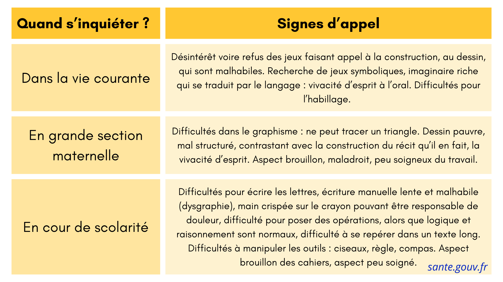

Le terme de dysgraphie est un trouble de l’écriture (au même titre que la dyslexie et la dysorthographie) qui renvoie à un trouble de la calligraphie affectant également la réalisation de formes géométriques. Il existe trois branches de la dysgraphie, celle linguistique, d’ordre spatial et moteur. (N’étant pas des professionnels de santé, nous n’allons pas nous attarder sur ces différences.) Cela se manifeste par :
- anomalie dans la conduite d’un trait d’écriture (malformations des lettres, tailles variables)
- irrégularités d’espacements entre les lettres et les mots
- difficulté à suivre les lignes horizontales d’écriture
- vitesse d’écriture inadaptée (trop lente ou trop rapide)
- écriture difficilement lisible
- concentration excessive lorsqu’il faut écrire. En effet, si parfois les enfants dysgraphiques ont une graphie qui restent lisibles c’est l’effort et la fatigue provoquée qui leur ai demandé qui doit vous alerter.
Ce qu’il faut comprendre : le geste de l’écriture ne s’automatise pas chez le-a dysgraphique, il reste au stade du graphisme
